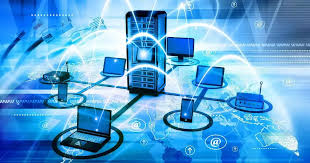
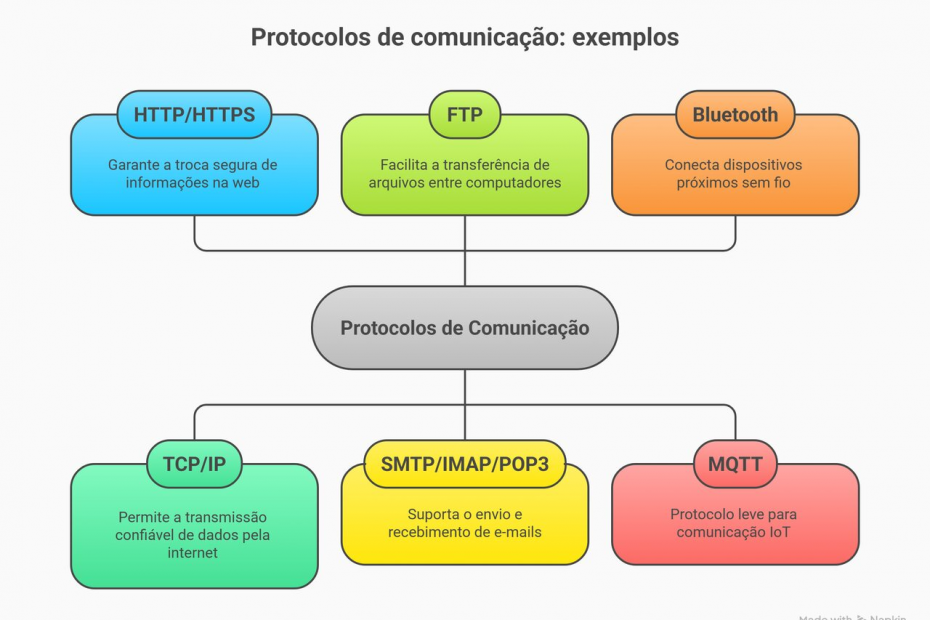
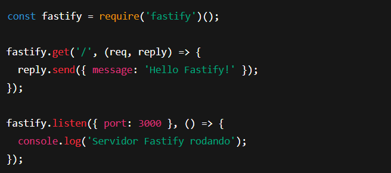

Fundamentos de Rede
Os Fundamentos de Redes abordam os princípios que permitem a comunicação entre computadores e dispositivos. Esse campo explica como as informações são enviadas, recebidas e organizadas dentro de uma rede, seja ela doméstica, corporativa ou global, como a Internet. Ao estudar redes, compreendemos os equipamentos envolvidos, os tipos de conexão, os protocolos de comunicação e a infraestrutura que possibilita o acesso a serviços, páginas web e transferência de dados. Esses conhecimentos são essenciais para configurar redes, garantir seu bom funcionamento e entender como a tecnologia se conecta e opera no nosso dia a dia.
Oque são redes de computadores
Uma rede de computadores é um conjunto de dispositivos (como computadores, servidores, roteadores) interligados que podem trocar dados entre si. A ideia é compartilhar recursos (por ex., impressoras, arquivos, internet) e permitir comunicação. É o fundamento para todas as outras coisas (internet, web, protocolos).
Oque é uma rede mínima?
Rede mínima pode ser entendida como o menor conjunto possível para que a comunicação funcione. Exemplo típico: dois computadores conectados diretamente ou através de um simples switch/roteador, compartilhando dados. Serve para entender o "mínimo" necessário para haver rede.
O que é a internet? O que a compõe?
A Internet é uma rede global de redes de computadores que utilizam protocolos padronizados para conectar bilhões de dispositivos no mundo inteiro. O que a compõe: Infraestrutura física (cabos de rede, cabos de fibra óptica, roteadores, data centers) Protocolos de comunicação (por exemplo, IP, TCP) Serviços (web, e‐mail, streaming) Operadores e provedores de acesso que interligam redes menores em redes maiores

O que é web?
A World Wide Web ("web") é um dos serviços que rodam sobre a internet, representando o conjunto de páginas, aplicações web, navegadores que permitem acesso a conteúdos por meio de links (URLs) e protocolos como HTTP/HTTPS. Ou seja: internet = infraestrutura; web = "parte" de serviços que usam essa infraestrutura.

O que é o mapa de fibra óptica. Mostre o mapa global de fibra óptica da internet.
O "mapa de fibra óptica" refere-se aos grandes cabos de fibra óptica submarinos ou terrestres que formam parte da infraestrutura física da internet, transportando enormes volumes de dados entre continentes e regiões. Esses mapas mostram como estão ligadas regiões como América do Norte, Europa, Ásia, África, via cabos submarinos e terrestres. Por exemplo, há uma boa visualização em "global internet infrastructure fiber optic cable map".

Quais os componentes de hardware de uma rede Wi-Fi?
Uma rede Wi-Fi é composta principalmente pelos seguintes equipamentos:
• Roteador Wi-Fi: distribui o sinal sem fio e conecta os dispositivos à internet.
• Modem: recebe a conexão do provedor e entrega ao roteador.
• Access Points (APs): usados para ampliar a cobertura Wi-Fi em ambientes maiores.
• Placas de rede wireless: permitem que notebooks, PCs e dispositivos se conectem ao Wi-Fi.
• Antenas: internas ou externas, responsáveis por transmitir e receber o sinal Wi-Fi.
Quais os componentes de hardware de uma rede local com cabo?
Em uma rede cabeada comum (LAN), os principais dispositivos são:
• Switch: conecta computadores e distribui os pacotes dentro da rede local.
• Roteador: liga a rede local à internet e define rotas de tráfego.
• Modem: conecta ao provedor de internet.
• Cabos Ethernet (UTP): geralmente Cat5e, Cat6 ou Cat6A.
• Patch Panel: organiza os cabos em redes estruturadas.
• Placas de rede (NIC): permitem que computadores usem conexão via cabo.
O que é um protocolo de comunicação?
Um protocolo de comunicação é um conjunto de regras e padrões que define como dados devem ser transmitidos, recebidos e interpretados dentro de uma rede. Exemplos: HTTP, TCP, IP, FTP, DNS.
O que é o Modelo OSI?
O Modelo OSI (Open Systems Interconnection) é um modelo teórico de 7 camadas que descreve como a comunicação
acontece em uma rede:
1) Física
2) Enlace
3) Rede
4) Transporte
5) Sessão
6) Apresentação
7) Aplicação
Ele serve para padronizar o funcionamento das redes e facilitar o entendimento.

E o Modelo TCP/IP?
O Modelo TCP/IP é o modelo real usado na internet, composto por 4 camadas:
• Acesso à Rede
• Internet
• Transporte
• Aplicação
Ele é mais simples e prático que o OSI e corresponde diretamente aos protocolos reais, como TCP, UDP, IP, HTTP,
DNS.
O que é o protocolo IPv4 e o IPv6?
IPv4: versão antiga e ainda mais usada do IP. Usa endereços de 32 bits, como: 192.168.0.1.
Permite cerca de 4 bilhões de endereços.
IPv6: versão moderna com 128 bits, como: 2001:0db8:85a3::8a2e:0370:7334.
Permite quantidade praticamente infinita de endereços.

Como IP e TCP são configurados em backend com Node.js?
Em Node.js, a configuração de IP e TCP é feita usando módulos internos:
• TCP: usando o módulo net
• IP/HTTP: usando o módulo http e definindo porta e IP do servidor
Exemplo básico:
const net = require('net');
const server = net.createServer((socket) => {
console.log("Cliente conectado!");
});
server.listen(3000, '127.0.0.1', () => {
console.log("Servidor TCP rodando...");
});
O que é o protocolo HTTP?
O HTTP (HyperText Transfer Protocol) é o protocolo usado pela Web para comunicação entre navegadores e servidores. Ele define como requisições (GET, POST, PUT, DELETE) são enviadas e como respostas retornam ao cliente.

O que é o protocolo HTTPS?
HTTPS é a versão segura do HTTP.
Ele usa criptografia TLS/SSL para proteger dados durante a transmissão, garantindo:
• sigilo
• integridade
• autenticação
Exemplo de framework HTTP no Node.js
O framework mais usado para trabalhar com HTTP no Node.js é o Express.js.
3 exemplos de Backend para troca de mensagens entre front e backend
1) GET (enviar dados do backend para o front)
const express = require('express');
const app = express();
app.get('/mensagem', (req, res) => {
res.send("Olá do backend!");
});
app.listen(3000);
2) POST (front envia dados para o backend)
app.use(express.json());
app.post('/enviar', (req, res) => {
const dado = req.body.msg;
res.send("Recebido: " + dado);
});
3) JSON de resposta
app.get('/usuario', (req, res) => {
res.json({ nome: "Guilherme", idade: 20 });
});